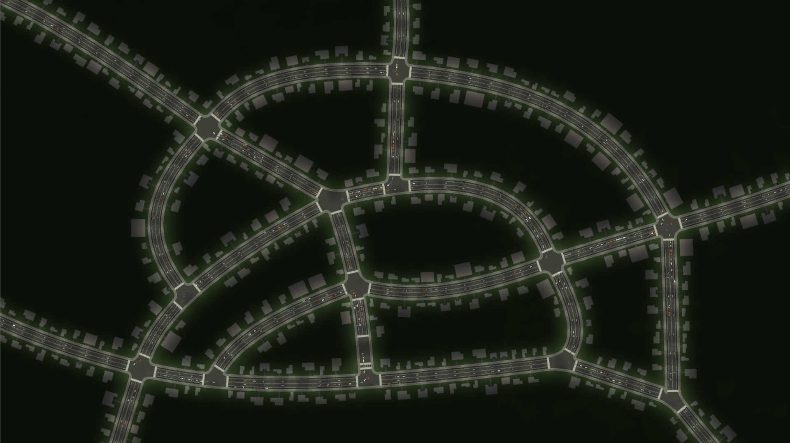
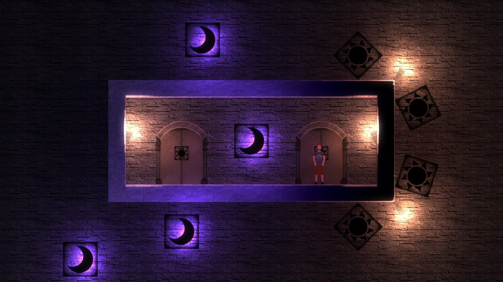

This Month in Rust GameDev #15 - October 2020
Welcome to the 15th issue of the Rust GameDev Workgroup's monthly newsletter. Rust is a systems language pursuing the trifecta: safety, concurrency, and speed. These goals are well-aligned with game development. We hope to build an inviting ecosystem for anyone wishing to use Rust in their development process! Want to get involved? Join the Rust GameDev working group!
You can follow the newsletter creation process by watching the coordination issues. Want something mentioned in the next newsletter? Send us a pull request. Feel free to send PRs about your own projects!
Table of contents:
- Annual Survey from the Rust GameDev WG
- Game Updates
- Learning Material Updates
- Library & Tooling Updates
- Popular Workgroup Issues in Github
- Requests for Contribution
Annual Survey from the Rust GameDev WG
As we did last year, we are once again running a Rust Game Development Ecosystem Survey. It'll only take 10 minutes, and your responses help us better understand the state of our ecosystem and where we should try to focus our collective efforts.
Game Updates
Veloren
Endless mountains to explore
Veloren is an open world, open-source voxel RPG inspired by Dwarf Fortress and Cube World.
In October, lots of work was done on the UI, and a buff system. There was an overhaul done to the staff item that gives it new primary and secondary attacks. There has also been work done on the axe and bow. The cloud system was overhauled and brought a cheaper way to compute the 3D noise that the system uses. The skill bar was overhauled to implement a new design that could handle the new buff system. This was also the first overhaul in over a year. A SFX system is in the works to allow effects to be mapped to blocks, for sounds like crickets or birds.
You can read more about some specific topics from October:
- Modelling Process
- Staff Overhaul
- New Skillbar and Buffs Visuals
- Cloud Improvements
- Buffs
- Alignment and Hostility
- Fixing CI
October's full weekly devlogs: "This Week In Veloren...": #88, #89, #90, #91.
In November, Veloren will release 0.8. Veloren will also be speaking at MiniDebConf on November 22nd.
Team hunt
Crate Before Attack
Interactive Histogram with Race Results
Crate Before Attack by koalefant (@CrateAttack) is a skill-based multiplayer game where frogs fight and race using their sticky tongues as grappling hooks.
A browser build can be played online.
Changes since the last update:
- Added a global leaderboard that visualizes Race and Training results in an interactive histogram.
- Tweaked frogs physics to make them more bouncy, added an option that would keep tongue connected as long as a key is being pressed.
- Online Ghosts were added. One can now compete with real players instead of AI when playing Race mode.
- Improved load-times: level graphics is now quantized with an 8-bit palette, signed distance fields that are used for collisions are now generated offline. Downloads are cached in an IndexedDB, so subsequent starts are even faster.
- Multiple bugs were fixed.
More details are in September and October DevLog entries and in YouTube-channel.
Egregoria

Egregoria's objective is to become a granular society simulation, filled with fully autonomous agents interacting with their world in real-time.
The 6th devlog was published. Updates include:
- Island generation.
- Day/night cycle.
- Human AI via utility systems.
- Specs to legion 0.3 port.
See also the recent video showcasing very basic AI.
Join Egregoria's Discord server.
Discussions: /r/rust_gamedev
A/B Street

A/B Street is a traffic simulation game exploring how small changes to roads affect cyclists, transit users, pedestrians, and drivers. Any city with OpenStreetMap coverage can be used!
Some of this month's updates:
- web version launched, powered by
winit,glow, and other dependencies having support for WebAssembly; - an OpenStreetMap viewer with 100 cities imported;
- "thought bubbles" for cars looking for parking, by Michael;
- slow portions of a trip highlighted in the info panel, by Sam;
Worship The Sun
 One of the many unique and confounding puzzles in the game
Worship The Sun is a dark, mysterious 2D puzzle-platform game with computer science themes. It introduces the player to a rich language of puzzle elements and challenges them to solve difficult puzzles that require experimentation, comprehension, and internalisation of the game's mechanics.
The game is built using a custom engine that sits on top of legion, wgpu, and a handful of other crates. It features dynamic lighting, a flexible particle system, bespoke collision behaviour, and a Vim-inspired level editor. The majority of game assets are hand drawn in Procreate and painstakingly animated.
The game is a few months into development with a release target of late 2021. You can read about how swimming was added to the game in GameDev Note 1: Taking the Plunge which contains a sneak peek at some of the levels. For updates and possible playtesting opportunities, follow @chrispatuzzo and a /r/WorshipTheSunGame subreddit.
Garden
A couple of trees growing and basking in the sun
Garden is a procedural tree-growing, strategical ecosystem-restoration and biological simulation game with an infinite amount of plant species where every leaf is simulated, and the natural resources are scarce. Every specimen is unique, as the plants grow by responding to the live changes in the environment. The player has to balance many complex mechanics to sustain life and go forward in the game. The game and the custom engine are developed in Rust with an OpenGL backend.
Garden developers (temporary name) are preparing for a demo release in a couple of months by tying everything together into a coherent experience. The game is also continually optimized to run on less powerful GPUs, so that everyone can enjoy it.
Some of the updates from the October devlog:
- Near-infinite variety of plant species achieved through treating branch segments as Markov chains (enabling different growth speeds and probabilities for other segment types' growth from one another) and simulating photosynthesis as an electrical circuit (enabling sugar storage in the form of root vegetables, for example).
- Concrete brick destruction mechanics were implemented. Dust particles for the animation that appears upon breaking, as well as the debris, were also added to the game.
- Saving and loading are almost complete.
- A watering can was added.
- Smoother soil and debris outlines.
Follow the developers @logicsoup and @epcc10 on Twitter for more updates.
Akigi
Akigi is a WIP online multiplayer game.
In October, more progress was made on the editor tool for placing entity spawn points. Work was started on prototyping the hunting skill. Functionality was added to allow focusing for TextAreas in the user interface. Improvements were made to the engine's asset management code to make it more generalized.
Full devlogs: #087, #088, #089, #090.
Sun Prison
Sun Prison by Dima Lazarev is a WIP turn-based meditation on Rubik's cube, Sokoban, and roguelikes, being implemented with Bevy engine. The game is in the very early stages of development, but it is already possible to get lost in the dark or to be eaten by zombies.
Follow @dmitrywithouti on Twitter for updates.
Camp Misty
Camp Misty is an asymmetric multiplayer game played on the command line. The game is played with two people. One of the players is a helpless victim searching for car parts. If they find all of the parts, they can repair their car and escape the camp. The other player is a ruthless killer who is trying to hunt down the victim.
The game was created as a learning exercise in about two weeks by @ReeCocho, with contributions from the many helpful members of /r/rust.
Antorum Online
Antorum Online is a micro-multiplayer online role-playing game by @dooskington. The game server is written in Rust, and the current "official" client is being developed in Unity. The server can be self-hosted, and the network protocol is open, so even custom clients that adhere to the protocol can connect and play.
Two more devlogs were published this month, regarding work done to implement shops, character creation, and a few other features:
The Honor Sagas
The Honor Sagas is an early-in-development 2d MMORPG project. October was the first month of development, and @ectonDev wrote a postmortem of the progress made while participating in #Devtober.
Project YAWC
Project YAWC is a turn-based strategy game in the style of Advance Wars in development by junkmail. October saw the release of Alpha 3, including dynamically generated info cards and minor networking changes. For inquiries or if you are interested in playtesting, contact projectyawc(at)gmail.com.
Power Kick
Power Kick is a one screen platform game inspired by similar old arcade games like Bubble Bobble and SnowBros. Your task is to hit the enemies till they get dizzy and then kick them out of their misery to proceed to the next stage. The kicked enemies will hit the colliding enemies with a possibility to create a chain reaction (similar to the pushed snowball in SnowBros).
The game has 20 stages and in stage 10 and 20 you will face a helicopter boss.
Can be played solo on the web through WebAssembly or up to two players in the downloadable version: the first player with the keyboard and the second one with a joypad.
The development took around two weeks thanks to macroquad and hecs.
rymd
rymd by @_profan is a space shooter prototype made with macroquad. Intended as a test platform for trying out rust for prototyping games and particularly for game AI programming purposes.
Development started at the end of October, recent additions include:
- Basic enemy AI behaviour mostly based on steering behaviours.
- Possibly the world's most nauseating physics-driven camera.
- Too many particles.
pGLOWrpg
The @pGLOWrpg (Procedurally Generated Living Open World RPG) is a long-term project in development by @Roal_Yr, which aims to be a text-based game with maximum portability and accessibility and focus on replayability, interactions, and emergent narrative.
For the past month the main focus of the development was on:
- Improving the UI.
- Implementing the input autocomplete system.
- Implementing save data import and parsing.
- Implementing world navigation system.
- Implementing rudimentary CLI graphics (for debugging and some future use).
Main features of the reported (pre-alpha) version are:
- Ability to generate and explore one or many worlds (see previous news).
For main feature reports and dev blogs follow @pGLOWrpg on Twitter.
Space Shooter
The Space Shooter project is a game in development by Carlo Supina and Micah Tigley. It is a 2D "shoot-em-up" game that takes place in space and is inspired by games like Raiden and Binding of Isaac.
Recent development has been focused on creating an online book for documentation for the game. While still a work in progress, the following content is now available:
If you're interested in hearing about planning an effective code refactor for a project using ECS, make sure to check out How to Revive a Dead Rust Project at RustFest Global 2020.
Weegames
Click to see a demo video
Weegames (source code) is a fast-paced minigame collection.
There are now 40 minigames in the collection. New features in the latest release include boss games and high scores.
Canon Collision
Canon Collision by @rukai is an Undertale + Homestuck fan-made platform fighter with powerful tools for modding.
This month, he completed the abstractions needed for character-specific logic. Notable changes:
- toriel's fireball
- wobbly fireball shaders
- items that can be picked up and thrown
- character specific logic
galaxy-sim.github.io

galaxy-sim.github.io (source) by @zephybite and @joshikatsu is a colliding galaxies simulation based on Barnes-Hut and direct algorithms. The project is written using Rust, ThreeJS, and WASM.
Discussions: Twitter
Ludum Dare 47
Ludum Dare is a regular game jam event, during which developers create games from scratch in a weekend based on a theme suggested by the community.
LD47's theme was "Stuck in a loop". Here are some of the games made with Rust:
-
"The Island" by @kuviman (source code).
A multiplayer online sandbox game. Explore, craft, and try to escape the island (spoiler: you can not, you are stuck in a loop). The world regenerates where you don't see.
Check out the devlog post: "LudumDare 47 - The Island".
-
"Time Ghosts" by @Healthire (source code).
You have a limited time to collect the next part for the Machine, when 12 seconds have passed time rewinds and you have to start over. But don’t worry, your past self is still around to repeat your past actions.
-
"Quantum Loops" by @necauqua (source code).
There is a particle forced to exist in a quantum loop and it really hates being real! Disrupt the quantum levels with most efficient use of your energy to let it escape back into nothing!
-
"Keep Inside" by @davidB made with Bevy (source code).
A solo pong on a circle.
-
"Keep Moving and Nobody Burns" by @FrancoisMockers made with Bevy (source code).
Aim for the high score while avoid getting burned either by that big wall of fire or by your own bombs! Every round, the game will get harder, but you will earn more points. To help you, blowing up those crates may drop bonus that will make your bombs more useful.
-
"Bloody Baron" by @torresguilherme (source code).
You’re in a building with 9 other people, and one of them is a brutal killer. Don’t get caught by them, and use your abilities and your logic skills to solve the mystery and vote the right person in the trial!
-
"Soy Content" by @walterpie made with Bevy (source code).
A misleading puzzle game with a twist. Find your way in a non-euclidean maze of interconnected rooms. Warning: Game doesn't contain any Soy.
Learning Material Updates
How to: WGPU + Winit + ECS + Pixels
@nyxtom published several articles on game development for Entity-Component-Systems, Windowing and Event Loops, and WGPU.
- ECS in Rust - written as a high level introduction to entity component systems and using the hecs crate.
- Winit and Pixels - introduces cross platform window management/event loops and provides a tutorial for writing simple pixel graphics and 2d game development using the pixels crate (based on WGPU).
- Framebuffers, WGPU and Rust - an in-depth analysis of high-level graphics terminology and a full length tutorial for setting up the api and clearing the screen with WGPU.
Creating a Snake Clone in Bevy
 Gameplay of snake clone
Gameplay of snake clone
Bevy is a rapidly growing game engine written in Rust. This tutorial walks through creating a snake clone, introducing Bevy concepts on the way. The tutorial covers resources, systems, timers, entities, components, materials, creating a grid system, and spawning/despawning entities.
Rust FFI: Microsoft Flight Simulator SDK
@ryan_levick made two livestreams about Rust FFI and SDK for Microsoft Flight Simulator 2020. You can watch recordings here:
- Part 1: bindgen, C ABIs, linkers, and more.
- Part 2: more high-level concerns like API design and making an idiomatic API.
Subscribe to @ryanlevick on Twitch for future streams.
Discussions: /r/rust
How to: Rust + SDL2 + OpenGL on the Web
@Therocode published an article that explains how to port games to the web using Emscripten. It is not only useful if you have an existing game to port, but also if you are looking for a starting point for a new application.
Discussions: /r/rust
Library & Tooling Updates
rust-psp
Move over Tetris Effect and Tetris 99, the first game has been created with
rust-psp, and it's Tetris! This was a big step because it proves that
rust-psp is ready for game development, even though it's still #![no_std].
std support is a work in progress, and the project is always open to new
contributors to the library, the tooling, or people who want to make PSP games
in Rust.
Another development for rust-psp this month is reverse engineering of the Sony library for the hardware vector floating point unit of the PSP. All the vector and matrix operations provided by the Sony library have been PR'ed to rust-psp's main repo, and there are still more functions to come.
To stay up to date on rust-psp development, you can join the project's Discord or follow @sajattack on Twitter.
gbemu
gbemu by @BlueBlazin is a Gameboy/Gameboy Color Emulator which runs in the browser.
... I wrote the emu just for myself as a learning experience. So it's lacking in a lot of features you'd expect from one made for others to use, and it's also not mobile-friendly unfortunately (but I'll work on that soon). Still, it may be of some interest to someone here :D
Discussions: /r/rust
skyline-rs
skyline-rs by @jam1garner is a project seeking to allow Rust code to unofficially use the Nintendo Switch SDK focused on modding.
This month, @jam1garner made a blog post, Rust for Modding Smash Ultimate, focused on detailing why Rust was such a good fit for modding games on the Switch and his experience porting Rust to the Nintendo Switch. It also features updates regarding:
- Crates for working with Nintendo and Namco textures formats (bntx and nutexb).
- An auto-updater client and server for Rustaceans writing Switch mods.
- The introduction of skyline-web, a new library for working with the Switch's web browser.
- Additions to the skyline fork of the Rust standard library.
shared-arena
shared-arena by @0x5eb is a thread-safe & efficient memory pool. Memory pools are useful for speeding up dynamic (de)allocation of large amounts of data of the same size.
shared-arena provides three memory pools with different trade-offs:
The crate uses unsafe in a few places, but the code is covered by the miri interpreter, valgrind and 3 sanitizers (address, leak, and memory) on each commit.
Discussions: /r/rust
glam v0.10.0
glam is a simple and fast linear algebra crate for games and graphics.
This month v0.10.0 was released. There were a lot of additions in this update and a small breaking change.
-
The return type of
Vec4::truncate()was changed fromVec3AtoVec3which is a breaking change and thus the version jumped from 0.9 to 0.10. -
Vector swizzle functions similar to those found in GLSL were added. Swizzle functions allow a vector's elements to be reordered. The result can be a vector of a different size to the input. Swizzles are implemented with SIMD instructions where possible, e.g. for the
Vec4type.let v = vec4(1.0, 2.0, 3.0, 4.0); // Reverse elements of `v`. // If SIMD is supported this will use a vector shuffle. let wzyx = v.wzyx(); let yzw = v.yzw(); // Swizzle the yzw elements of `v` into a `Vec3` let xy = v.xy(); // You can swizzle from a `Vec4` to a `Vec2` let yyxx = xy.yyxx(); // And back again -
no_std support was added, using libm for math functions that are not implemented in
core. -
Optional support for the bytemuck crate was added, this allows appropriate glam types to be cast into
&[u8].
For a full list of changes see the glam changelog.
density-mesh
density-mesh by @PsichiX is an image density/height map to mesh generator. It consists of two crates:
- density-mesh-core - generates mesh from density map.
- density-mesh-image - generates density map from image.
A typical use case would be to use two of them to create mesh from images but in case you have your own image handler, you can stick to the core module and produce density maps by yourself.
There's also a CLI tool.
Discussions: /r/rust
Rapier
Rapier is a set of 2D and 3D physics engines for games, animation and robotics written in Rust.
This month the version 0.3.0 has been released with exciting new features:
- cylinders and cones as collider shapes;
- collision groups (with bit masks) and collision filters (with callbacks) for deciding what pairs of colliders can touch;
- the ability to set the mass of rigid-bodies explicitly;
- linear and angular damping, to progressively slow down rigid-bodies;
- the ability to attach some user-defined data (of type
u128) to any collider or rigid-body.
The bevy_rapier plugin for the Bevy game engine has been updated to support all the aforementioned features.
Finally, a continuous benchmarking infrastructure has been set up to make sure performance regressions can be detected early.
physme
Physme is not your typical physics engine. It doesn't exactly simulate real world physics and it never will. Instead, it has only two goals:
- To provide satisfying real-time dynamics for 2D and 3D games.
- To have a simple to use API.
Physme will only work with bevy and is not made to support other game engines. The current release supports bevy 0.2, but work is being done to support bevy 0.3.
The current feature set includes:
- Rigid bodies
- Multiple colliders per body
- Static and semikinematic bodies
- Sensor bodies
- Oriented bounding boxes
- Fixed, mechanical and spring joints
- Broad phase
All of the above-listed features are supported in both 2D and 3D.
This Month in Mun

Mun is a scripting language for gamedev focused on quick iteration times that is written in Rust.
October updates include:
- a plugin for mdbook to test Mun code;
- support for modules and visibility;
- the ability to generate enum ABI types;
- bug fixes and other improvements.
building-blocks
Building Blocks by @bonsairobo is an engine-agnostic voxel library that implements real-time data structures and algorithms for: edits on compressed maps, meshing, search, and collisions.
The library has recently seen two releases:
To prove out the functionality of the library, the voxel-mapper project was ported to use building-blocks instead of ilattice3. This resulted in improved performance and memory usage when doing large edits and working with large maps:
Join Building Blocks's Discord server.
Rust GPU v0.1
 Sky example in Rust GPU
Sky example in Rust GPU
Rust GPU is a project backed by Embark Studios to make Rust a first-class language and ecosystem for building GPU code.
Although still in very early stages of development, Rust GPU released v0.1 in October, and has already garnered over 2000 stars on Github. Currently, compiling and running very simple shaders works, and a significant portion of the core library also compiles. While things like if-statements and while-loops are working, many things aren't implemented yet. For example, for-loops, iterators and match/switch aren't supported yet. That means that while being technically usable, Rust GPU is far from being production-ready.
The motivation behind the project:
Historically in games, GPU programming has been done through writing either HLSL, or to a lesser extent GLSL. These are simple programming languages that have evolved along with rendering APIs over the years. However, as game engines have evolved, these languages have failed to provide mechanisms for dealing with large codebases, and have generally stayed behind the curve compared to other programming languages.
In part this is because it's a niche language for a niche market, and in part this has been because the industry as a whole has sunk quite a lot of time and effort into the status quo. While over-all better alternatives to both languages exist, none of them are in a place to replace HLSL or GLSL. Either because they are vendor locked, or because they don't support the traditional graphics pipeline. Examples of this include CUDA and OpenCL. And while attempts have been made to create language in this space, none of them have gained any notable traction in the gamedev community.
The code for the sky example above:
#[spirv(entry = "fragment")]
pub fn main_fs(input: Input<Vec4>, mut output: Output<Vec4>) {
let dir: Vec3 = input.load().truncate();
let cs_pos = Vec4(dir.0, -dir.1, 1.0, 1.0);
let ws_pos = {
let p = clip_to_world.mul_vec4(cs_pos);
p.truncate() / p.3
};
let dir = (ws_pos - eye_pos).normalize();
let color = sky(dir, sun_pos); // evaluate Preetham sky model
output.store(color.extend(0.0))
}
Discussions: /r/rust, Hacker News, Twitter
gfx-rs
gfx-rs support for D3D has been improved. @kvark landed a few critical fixes in the DX12 backend, including the proper handle freeing, compressed textures support, blend factors, and debug markers.
@cwfitzerald brought DX11 backend practically to the 1st tier with titanic work spread over a dozen of pull requests. It is now able to run bve-reborn correctly:
ggez 0.6 Call for Contributions
The ggez game library traditionally tries to make at least one release
at the end of each year, and that is fast approaching. While the
graphics engine rewrite is still a work in progress, there's plenty of
other useful updates to be made. Bugfixes, dependency updates, and other
ergonomic fixes are all on the table. A lot of work has already been
done: removing nalgebra from the public API in favor of just using
mint, re-working some dependencies to improve build times, and
updating and cleaning up a pile of minor issues. However, there's still
about a hundred accumulated bugs and PR's to triage and figure out, and
a lot of testing to do. Please help! The release checklist is
available here.
miniquad
Miniquad compiled from scratch and running on Wayland.
miniquad is cross-platform windowing and rendering library.
This month two big PRs got into the final review stage:
- Native Wayland support: as usual, no third-party dependencies or C code involved; Clean build time for Wayland examples are about 3s.
- The Metal backend PR showed good signs of life, quad and offscreen examples got successfully run on Metal.
macroquad
Macroquad-particles real-life example
macroquad is a cross-platform (Windows/Linux/macOS/Android/iOS/WASM) game framework built on top of miniquad.
This month was about polishing 0.3-alpha version. Important things that got fixed:
- Text rendering was reimplemented with fontdue: example, web demo.
- A long-term issue with Android resources system got fixed.
- Particle system was released: example, [web demo][particles-web-demo].
And special shoutout goes to donuts game by @cedric-h - a simple game made in a couple of days, like a jam game. It's a really good showcase of macroquad's approach to simple game code that allows hardcoding and hacks for empowering gameplay experiments.
rg3d
rg3d is a game engine that aims to be easy to use and provide large set of out-of-box features. Some of the recent updates:
- Implemented fully asynchronous resource loading.
- Added compressed textures support (DXT1, DTX3, DTX5).
- Added filtering and wrapping options for textures.
- Added sky box.
- Added texture import options for resource manager.
- All dependencies were moved to rg3d workspace, so there is no need to manually download them when working with the latest version of the engine.
- Extracted HRTF code in the separate crate, so it could be used without rg3d.
- Lots of other bugfixes and improvements.
Join the rg3d's Discord channel or follow Dmitry Stepanov on twitter.
Bevy Engine v0.3
Bevy is a refreshingly simple data-driven game engine built in Rust. It is free and open source forever!
This month, thanks to 59 contributors, 122 pull requests, and their generous sponsors, Bevy 0.3 was released. You can view the full Bevy 0.3 announcement here. Here are some highlights:
- Initial Android and iOS support
- Asset system improvements:
- Asset handle reference counting
- Asset loaders can now load multiple assets
- Sub asset loading
- Asset dependencies
- GLTF scene loader
- Bevy ECS improvements
- Query ergonomics: query.iter() returns a real iterator now!
- 100% lockless parallel ECS
- Performance improvements
- Thread local resources
- Flexible mesh vertex attributes and index buffer specialization
- WASM asset loading, touch input, transform re-rewrite, gamepad settings, plugin Groups, dynamic Window Settings, documentation search-ability.
Discussions: /r/rust, hacker news, twitter
Community updates:
- bevy_rapier 0.5: The Rapier Physics project released updates to their official Bevy plugins, which add support for Bevy 0.3 as well as the latest Rapier features announced here.
- bevy_easings: A plugin for easing a component value to another value, mainly used to animate transition between two transforms, but usable for other components.
- bevy_miniquad: A plugin replacing winit windowing and render pipeline with miniquad library.
- physme: A simplistic physics engine for both 2D and 3D simulation. Physically inaccurate, but feels satisfying and is easy to use.
- bevy_networking_turbulence: Networking plugin running on naia-socket and turbulence libraries.
- Making a Snake Clone: Walkthrough on how to make a snake clone.
- bevy_tilemap: A plugin with generic types for rendering multi-threaded chunk-based tile maps.
- Keep Inside: A solo pong on a circle (made for Ludum Dare 47)
- Keep Moving and Nobody Burns: A bomberman against time (made for Ludum Dare 47)
Join the Bevy's Discord, /r/bevy subreddit, and follow @BevyEngine on Twitter.
Tetra
Tetra is a simple 2D game framework, inspired by XNA and Raylib. This month, versions 0.5.1 and 0.5.2 were released, fulfilling some long-standing feature requests:
- Custom error types can now be used in your game loop
- Custom shaders gained support for multiple texture samplers and color uniforms
- Methods were added to
TextureandCanvasfor writing pixel data at runtime - Various helpful
stdtraits were implemented forColor
For full details and a list of breaking changes, see the changelog.
ogmo3
ogmo3 is a Rust crate for parsing projects and levels created with
Ogmo Editor 3. It is loosely modeled after ogmo-3-lib, the Haxe reference
implementation of an Ogmo level parser.
This month, it was released onto crates.io for the first time, and a full example was added, showing how a simple project can be loaded into a game engine.
Wilds
Wilds is very early in development game engine.
It features a renderer that uses Vulkan ray-tracing extension supported by NVidia RTX cards and future AMD cards. Screenshot above is rendered using DDGI technique implemented exclusively with Rust and GLSL for shaders. In the whole scene there is only one directional light source - "sun" - and no "ambient" light. All geometry in viewport is shadowed from "sun" and is lit with diffuse illumination.
To keep things as simple as possible the engine uses Hecs - minimalistic ECS library. Assets are loaded asynchronously using Goods asset manager.
Traditional rasteriazation rendering pipeline and support wgpu backend are planned to support wider range of platforms/hardware.
Implementing GUI system and basic editor is also a priority goal.
Follow progress on Twitter. Contributions and feedback are always welcome.
fastnbt & fastanvil
fastnbt by @owengage is a fast parsing library for Minecraft's NBT and Anvil formats.
The project consists of several crates:
- fastnbt - fast deserializer and parser for Minecraft: Java Edition's NBT data format.
- fastanvil - for rendering Minecraft worlds to maps.
- fastnbt-tools - various tools for NBT/Anvil, notably a map renderer.
- anvil-wasm - an entirely in-the-browser map renderer. Demo at owengage.com/anvil.
The project supports only the latest version of Minecraft (1.16 at the moment).
Discussions: /r/rust
mcproto
mcproto by @Twister915 is an implementation of the Minecraft multiplayer network protocol in Rust. It consists of three crates:
- mcproto-rs - the protocol itself,
- mctokio - tokio I/O stuff,
- rustcord - a layer 7 server-switching proxy implementation (WIP).
Discussions: /r/rust
Ajour - World of Warcraft Addon Manager
Ajour is a World of Warcraft addon manager written in Rust using Iced as GUI library. The project is completely advertisement free, privacy respecting, and open source.
October updates include:
- Catalog support for installing addons.
- Beta, PTR support.
- Release channels on addons.
- CLI options to run Ajour headless.
- Community driven API.
Join the Discord server and say hi.
Proton 5.13-1
In addition to adding Linux Support for more Windows-exclusive games, Valve Software's wine-based translation layer for Linux: Proton now includes Rust as part of its build system. Media Converter, is a Proton module written in Rust as a gstreamer plugin to convert certain media encodings from one format to another.
Documentation for building Proton is available on Github. Further documentation on Media Converter and its source code is available on the module's repository
Popular Workgroup Issues in Github
Requests for Contribution
- Embark's open issues (embark.rs).
- winit's "Good first issue" and “help wanted” issues.
- gfx-rs's "contributor-friendly" issues.
- wgpu's "help wanted" issues.
- luminance's "low hanging fruit" issues.
- ggez's "good first issue" issues.
- Veloren's "beginner" issues.
- Amethyst's "good first issue" issues.
- A/B Street's "good first issue" issues.
- Mun's "good first issue" issues.
- SIMple Mechanic's good first issues.
- Bevy's "good first issue" issues.
That's all news for today, thanks for reading!
Want something mentioned in the next newsletter? Send us a pull request.
Also, subscribe to @rust_gamedev on Twitter or /r/rust_gamedev subreddit if you want to receive fresh news!